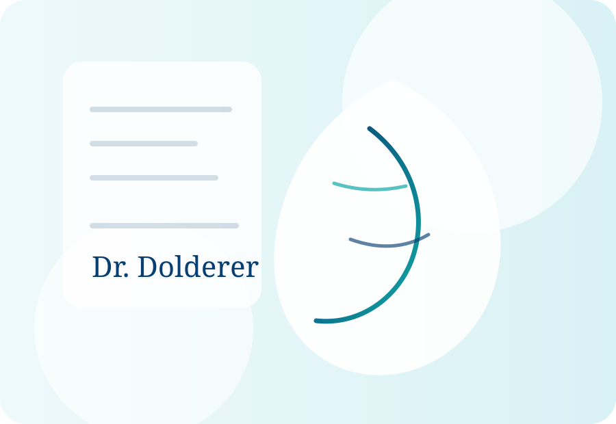

Gesicht
Lidstraffung, Facelift, Nasenkorrektur und Konturbehandlungen werden individuell nach Befund und Ziel geplant.
Ästhetische und Plastische Chirurgie
Ästhetische und plastische Chirurgie umfasst mehr als einzelne Eingriffe. Sie verbindet anatomisches Verständnis, chirurgische Präzision und ein feines Gespür für Proportionen.
Einordnung
Eine sinnvolle Behandlung beginnt mit einer ärztlichen Analyse: Welche Veränderung wird gewünscht? Welche anatomischen Voraussetzungen bestehen? Welche Verfahren sind realistisch, welche nicht?
In der ästhetischen Chirurgie geht es um harmonische Ergebnisse, die zur Person passen. In der plastischen Chirurgie kommen zusätzlich formende und wiederherstellende Aspekte hinzu. Beide Bereiche profitieren von einer ruhigen Planung, klarer Aufklärung und sorgfältiger Nachsorge.

Schwerpunkte
Lidstraffung, Facelift, Nasenkorrektur und Konturbehandlungen werden individuell nach Befund und Ziel geplant.
Botox, Hyaluron, Biostimulation und Hautbehandlungen können subtil unterstützen, wenn sie sinnvoll dosiert werden.
Formende und straffende Verfahren erfordern eine realistische Einschätzung von Gewebe, Heilung und Proportionen.